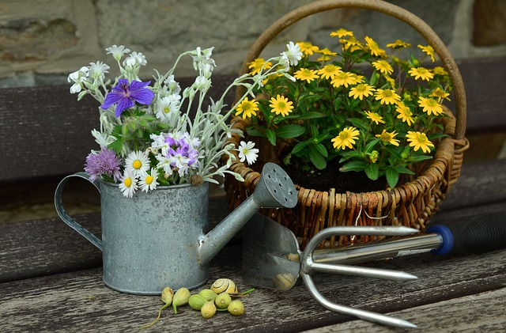

Types Of Flowers
Welcome to our Flowers World!
Here, we celebrate the enchanting beauty and
profound significance
of flowers in our lives.
As flower enthusiasts, we are dedicated to sharing our knowledge with fellow admirers of nature's most exquisite creations.
At our Flowers World, our mission is simple yet profound: to educate and uplift individuals through the wondrous world of flowers.
We believe that flowers have the power to evoke joy, evoke emotions, and
enhance our overall well-being.Through our website,
we aim to cultivate a deeper appreciation for the natural beauty
and cultural significance of flowers.



Soil
CARE
Watering
Most flowers require regular watering to stay healthy and vibrant. Ensure that the soil is evenly moist but not waterlogged. Different flowers have varying water needs, so it's essential to research the specific requirements of each type.
Sunlight
Adequate sunlight is crucial for the photosynthesis process, which allows plants to produce energy. Most flowering plants thrive in full sunlight, while others may prefer partial shade. Understanding the sunlight preferences of your flowers will help you provide the optimal conditions for their growth.
Soil
Good-quality soil is essential for healthy plant growth. Ensure that the soil is well-draining and rich in nutrients. You can improve soil quality by adding organic matter such as compost or mulch.
Fertilization
Fertilizing your flowers can help promote healthy growth and vibrant blooms. Use a balanced fertilizer formulated for flowering plants and follow the manufacturer's instructions for application.
Pruning
Regular pruning helps maintain the shape and health of your flowers. Remove dead or diseased foliage, as well as spent blooms, to encourage new growth and flowering.
Pest and Disease Control
Keep an eye out for pests such as aphids, spider mites, and whiteflies, as well as common diseases like powdery mildew and fungal infections. Use natural or chemical controls as needed to protect your flowers from damage.
Mulching
Mulching around your flower beds helps retain moisture, regulate soil temperature, and suppress weeds. Use organic mulches such as wood chips or straw to provide these benefits while also adding nutrients to the soil as they decompose.
Support
Some flowering plants may require support to prevent them from flopping over or becoming damaged. Use stakes, trellises, or cages to provide support as needed, especially for tall or heavy-blooming varieties.
Facts About Flowers

Arrangements Of Flowers
Bouquets are classic arrangements consisting of a collection of flowers and greenery tied together with ribbon or twine. They can be hand-tied for a casual look or arranged in a vase for a more formal presentation.
Centerpieces are focal arrangements designed to adorn tables at events or gatherings. They often feature a combination of flowers, foliage, and decorative elements arranged in a vase or container.
Corsages and boutonnieres are small, wearable arrangements typically worn at weddings, proms, or other special occasions. Corsages are worn by women and usually consist of flowers and ribbon, while boutonnieres are worn by men and feature a single flower or small cluster.
Wreaths are circular arrangements made from flowers, foliage, and other materials. They are commonly used as decorations for doors, walls, or grave sites, and can be designed in various styles, including seasonal or holiday-themed wreaths.
Flower baskets are arrangements displayed in decorative baskets or containers. They can be filled with a variety of flowers and greenery, arranged to cascade over the edges of the basket for a natural, garden-inspired look.
Flower crowns are whimsical arrangements worn on the head, often at festivals, weddings, or outdoor events. They are made by wiring or stringing flowers and foliage together to create a crown-like shape.
Ikebana is the Japanese art of flower arranging, characterized by its minimalist and asymmetrical style. Ikebana arrangements often feature a few carefully selected flowers and branches arranged in a simple yet elegant manner.
Floral installations are large-scale arrangements designed to make a statement in indoor or outdoor spaces. They can include arches, arbors, backdrops, or hanging installations created using flowers, branches, and other natural materials.